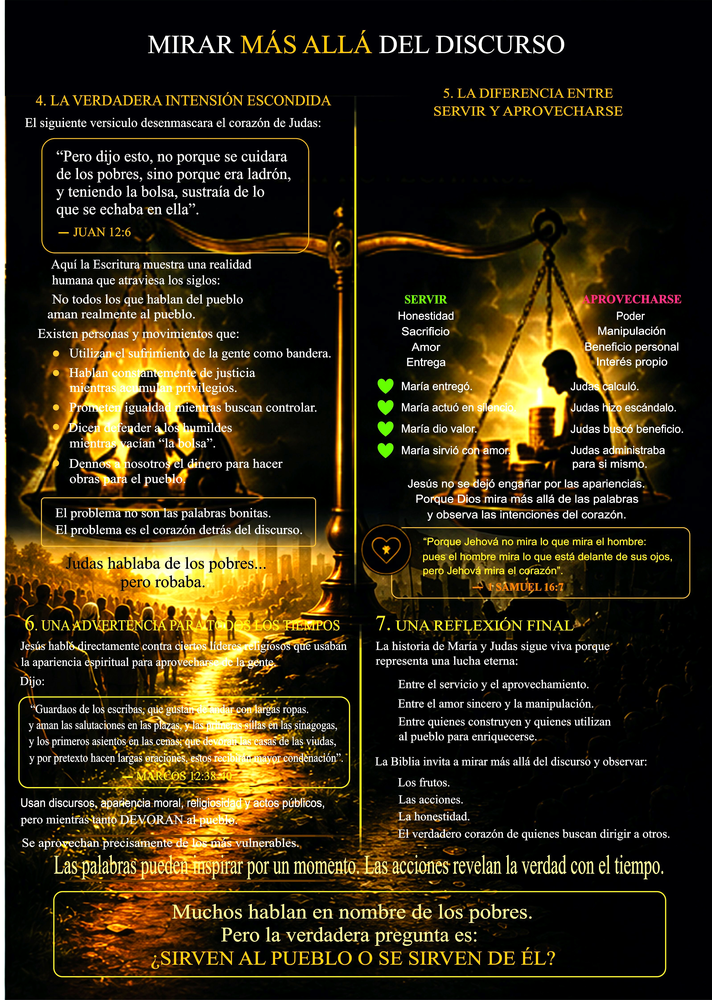

La diferencia no está en el discurso, sino en el corazón.


"Muchos hablan en nombre de los pobres. Pero ¿Sirven al pueblo o se sirven de él?"
Dos maneras de acercarse al pueblo
La diferencia no está en el discurso, sino en el corazón.

"Muchos hablan en nombre de los pobres. Pero ¿Sirven al pueblo o se sirven de él?"